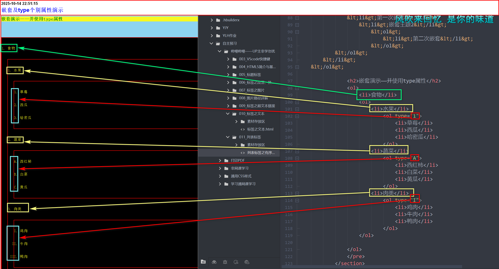

有序列表是一列项目，列表项目使用数字进行标记。
有序列表始于<ol>标签。
每个列表项始于<li>标签
具体的操作过程 <ol> <li>这是第一个列表项</li> <li>这是第二个列表项</li> <li>这是第三个列表项</li> </ol>
- 这是第一个列表项
- 这是第二个列表项
- 这是第三个列表项
标签演示
type属性编辑
意思就是：替换，前缀的样式。
- 1 表示列表项目用数字标号(1，2，3……)
- a 表示列表项目用小写字母(a，b，c……)
- A 表示列表项目用大写字母(A，B，C……)
- i 表示列表项目用小写罗马数字标号(i,ii,iii……)
- i 表示列表项目用大写罗马数字标号(I,II,III……)
具体的操作步骤： <ol type="1"> <ol type="a"> <ol type="A"> <ol TYPE="i"> <ol type="I">
嵌套有序标签
有序标签是可以嵌套的
但是不建议多次嵌套，会导致，界面混乱，且难以维护
具体操作步骤： <ol> <li>嵌套主题1</li> <li> <ol> <li>第一次嵌套</li> <li>嵌套主题2</li> <ol> <li>第二次嵌套</li> </ol> </ol> </li> </ol>嵌套演示——并使用type属性
- 食物
- 水果
- 草莓
- 西瓜
- 哈密瓜
- 蔬菜
- 西红柿
- 白菜
- 黄瓜
- 肉类
- 鸡肉
- 牛肉
- 鸭肉
注意：
嵌套尽量不要多次嵌套，不仅内容混乱，而且难以维护
可以通过，type更改前缀